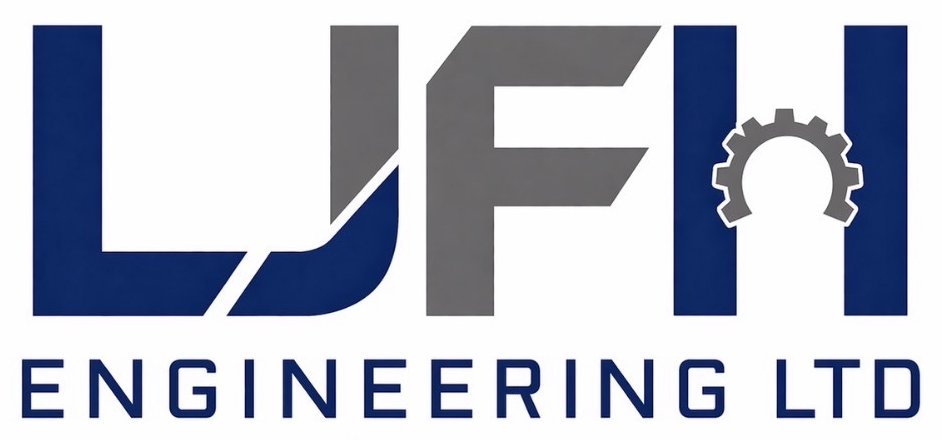

Mechanical & Multi-Skilled Shift Cover
Long-term and ad hoc engineering cover to support existing teams and operations.

LJFH ENGINEERING LTD · GREAT YARMOUTH
Reliable mechanical and multi-skilled engineering support — from ad hoc shift cover and breakdown response to long-term maintenance and PPM contracts.
LJFH Engineering Ltd is based in Great Yarmouth and provides mechanical and multi-skilled engineering support across a wide variety of industries.
We provide long-term and ad hoc shift cover alongside short and long-term maintenance and planned preventative maintenance (PPM) contracts.
Our practical, hands-on engineering support covers fluid power repairs and fault finding, breakdowns, fabrication and machining, machinery overhauls and general mechanical maintenance — helping our clients reduce downtime and keep their machines moving.
Long-term and ad hoc engineering cover to support existing teams and operations.
Planned maintenance support available on both short and long-term contracts.
Hydraulic and pneumatic repairs, component replacement, diagnostics and fault finding.
Mechanical fault diagnosis and repair focused on returning machinery to service.
Engineering fabrication and repair work to support machinery and plant.
Machining support for repair, maintenance and engineering requirements.
Strip-down, inspection, repair and overhaul of industrial machinery and mechanical equipment.
This section is ready for genuine customer testimonials. The placeholders below are intentionally not presented as real reviews.
“Add a customer testimonial here describing the work carried out and their experience working with LJFH Engineering.”
CLIENT NAME · COMPANY / POSITION“Add a second genuine customer testimonial here. Two or three concise recommendations will work particularly well.”
CLIENT NAME · COMPANY / POSITION“Add another verified testimonial here when available.”
CLIENT NAME · COMPANY / POSITIONAd hoc cover through to long-term contracts.
Hands-on mechanical, maintenance and fluid-power capability.
PPM alongside breakdown and repair work.
Support across a diverse range of industrial environments.
Discuss shift cover, maintenance, PPM, breakdown support or a specific engineering requirement.